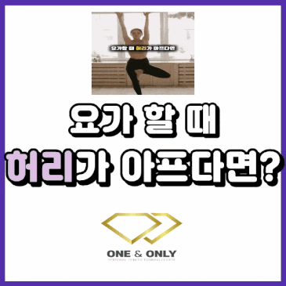
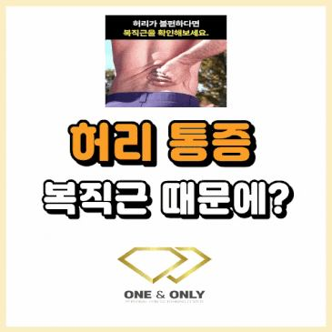

허리재활 · 부산교대
부산 허리재활 PT
허리디스크, 허리 수술 후 재활, 오래 반복되는 허리 통증. 아픈 허리만 보지 않고 허리가 일을 떠안게 된 이유를 찾아 1:1로 운동합니다.
이런 허리 통증으로 많이 오세요
- 허리디스크 진단을 받은 뒤
- 운동을 해도 되는지, 어떤 동작은 피해야 하는지 몰라 움직임이 줄어든 경우
- 허리 수술 후
- 병원 재활을 마쳤지만 걷기, 달리기, 운동으로 돌아가기가 막막한 경우
- 오래 앉아 있으면 아픈 허리
- 업무나 운전으로 오래 앉아 있으면 허리가 뻐근하고 일어설 때 아픈 경우
- 좋아졌는데 숙이기가 무서울 때
- 통증은 줄었는데 허리를 굽히거나 물건을 드는 게 여전히 두려운 경우
- MRI는 괜찮다는데 계속 아플 때
- 검사에서 큰 이상이 없다고 들었는데 통증이 이어지는 경우
- 평가허리 굽히기·젖히기, 누워서 다리 들기, 고관절과 등 움직임, 근육별 수축 능력(MAT)을 확인합니다.
- 원인 찾기허리가 대신 버티게 만드는 곳을 찾습니다. 약해진 엉덩이 근육, 굳은 고관절, 호흡과 복압 문제가 대표적이에요.
- 내 몸에 맞는 움직임DNS로 호흡과 몸통 안정성을 다시 세우고, Motor Control로 숙이기·들기·일어서기를 다시 익힙니다.
- 운동STC, 기능성 운동, 근력 운동으로 일상과 운동에서 다시 아프지 않게 버틸 힘을 만듭니다.


관련 블로그 글
블로그 보기 ↗
요가할 때 허리가 아프다면? 허리 통증의 원인과 운동요가할 때 허리가 아프다면? 복직근 스위치를 켜보세요. 예전부터 지금까지 많은 분들이 요가를 하고 있으시죠? 요가를 하다가 허리가 아팠던 경험…- 축구할 때 허리 아픈 친구 축구장에서 허리 재활운동하기축구하는 분들 축구하다 허리 아픈 경우 있으신가요? 제가 친구 축구팀에 용병으로 갔을 때 (비골 골절되기 전이에요.) 친구가 허리가 아프다고 하…

허리 통증, 복직근 때문일 수 있어요. (MAT 테스트 후기)평소 허리가 불편하신 적 있으신가요? 혹시 이런 생각 해보신 적 있으신가요? "허리가 자꾸 뻐근하고 불편한데, 이유를 모르겠어요." "스트레칭을…
자주 묻는 질문
허리재활 상담 전에 많이 물어보시는 것
- 허리디스크인데 운동해도 되나요?
- 대부분은 상태에 맞는 운동이 회복에 도움이 됩니다. 첫 시간에 지금 해도 되는 움직임과 잠시 피할 움직임을 나눈 뒤 단계적으로 진행해요. 다리 저림이나 힘 빠짐이 점점 심해지거나 대소변에 이상이 생기면 운동보다 병원 진료가 먼저입니다.
- 허리 수술 후 언제부터 PT를 받을 수 있나요?
- 수술한 병원의 안내에 따라 병원 재활을 마친 뒤, 담당 의료진이 허용한 범위에서 시작합니다. 상담 때 수술 종류와 시기, 병원에서 받은 주의사항을 알려주시면 그에 맞춰 계획을 세웁니다.
- 몇 번 정도 받아야 하나요?
- 통증 기간, 생활 습관, 목표에 따라 다릅니다. 첫 상담과 평가 후에 필요한 횟수와 진행 순서를 함께 정하고, 진행하면서 계속 조정합니다.
어디가, 언제부터 불편한지
편하게 말씀해 주세요
첫 시간은 상담과 움직임 평가부터 진행합니다.